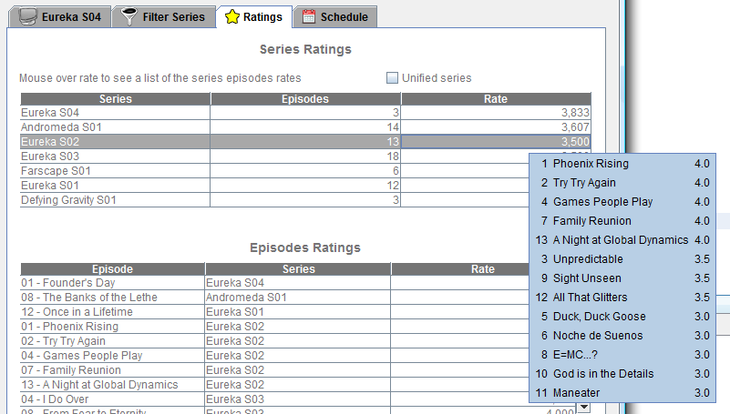

| The Ratings panel |
|---|

|
|---|
The statistics panel shows 2 tables of series average ratings and episodes ratings.
- Series Ratings.The average rating of the series.There are 3 columns in the table:
The series title and season, the number of episodes that have been rated and the average rating.
When mouse is over the rating column the rating of all the series' episodes are displayed.
- Episodes Ratings.The rating of indivintual episodes.There are 3 columns in this table:
The episode's title, the episode's series and the rating.
|